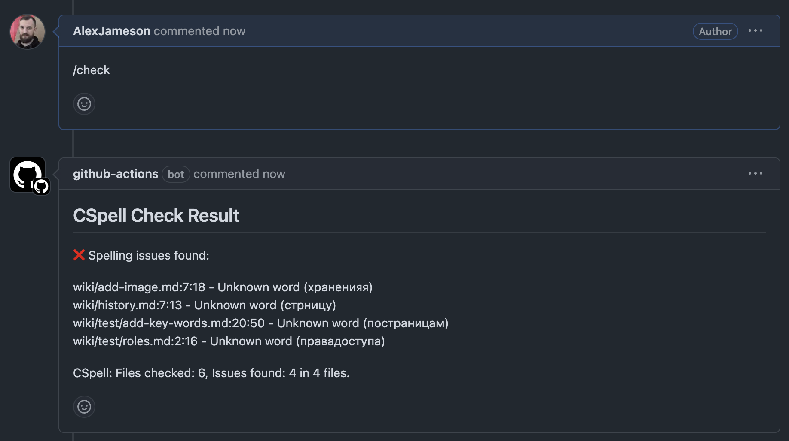

GitHub Action для запуска CSpell в CI
Некоторое время назад я написал статью о том, как использовать CSpell для проверки орфографии. В ней я упомянул, что можно создать GitHub Action для запуска CSpell в рамках CI-пайплайна. В тот момент у меня было только примерное понимание того, как такой Action должен работать, а в продакшене финальный вариант писали уже наши программисты с нуля.
Я решил доделать Action самостоятельно, чтобы дать любому пользователю возможность запускать CSpell в том числе в пул-реквестах на GitHub.
Требования и ограничения
-
Основным требованием для этого процесса была возможность запуска CSpell с использованием того же конфигурационного файла и тех же словарей, которые могут использоваться локально.
-
CSpell должен запускаться по команде в комментарии, оставленном в пул-реквесте.
-
Проверяться должны те файлы, которые были изменены в пул-реквесте.
Последний пункт несет в себе ограничение, связанное со спецификой работы CSpell. Этот инструмент умеет проверять только файлы целиком, а не отдельные строки. Таким образом, при конфигурации нужно сделать выбор: либо проверять все файлы, в которых есть измененные строки, либо же собрать все измененные в коммитах строки в один временный файл, и проверить уже его. Я сделал выбор в пользу проверки реально существующих файлов, даже с учетом того, что в результатах проверки могут быть ошибки, которые появились не в рамках текущего пул-реквеста. Также у выбранного мной способа есть дополнительное преимущество — при проверке таких файлов будет указана строка, на которой есть слово, содержащее ошибку.
Реализация
Главный вызов в создании Action такого рода заключается в правильном вычислении дельты (diff) между HEAD текущей ветки и HEAD ветки, в которую должен быть вмержен пул-реквест (base branch). На маркетплейсе GitHub есть Actions, которые должны позволять это делать, но ни один из них не сработал в моих условиях, так что я взял за основу код, предложенный Claude Sonnet 3.7, и доработал его под свою задачу.
В моей реализации Action работает следующим образом:
-
В первых четырех шагах (начиная с
Checkout repositoryдоInstall Russian dictionary) в коде ниже происходит подготовка репозитория и установка всех необходимых пакетов в раннере. -
На шаге
Fetch PR detailsвычисляется дельта между HEAD текущей ветки и HEAD ветки, в которую должен быть вмержен пул-реквест. -
В следующих шагах —
Checkout PRиGet changed files— подготавливаются файлы, попадающие в вычисленную дельту. -
Шаг
Run CSpell checkотвечает непосредственно за запуск проверки орфографии в этих файлах. Также на этом шаге подготавливается контент комментария, который будет отправлен в пул-реквест по окончанию проверки. В этом комментарии будет один из трех возможных результатов:- Обнаружены ошибки. В таком случае в комментарии будут отправлены ошибки, которые были найдены в процессе проверки.
- Проверка прошла успешно. В таком случае в комментарии будет отправлен текст
✅ Spelling check passed for all changed files. - Не обнаружены файлы, подлежащие проверке. В таком случае в комментарии будет отправлен текст
✅ No files changed to check..
В данном случае не предусмотрена обработка ошибок, возникающих в ходе запуска Action. Такие ошибки могут быть связаны с неверной конфигурацией, исчерпанием лимита бесплатного времени работы (2000 минут в месяц) и пр.
-
Последний шаг —
Comment PR— отправляет комментарий с результатами в пул-реквест.
Пример проверки:

Получившийся файл расположен по адресу .github/workflows/cspell-check.yml и выглядит следующим образом:
name: CSpell Check
on:
issue_comment:
types: [created]
permissions:
contents: read
pull-requests: write
issues: write
jobs:
cspell-check:
if: github.event.issue.pull_request && contains(github.event.comment.body, '/check')
runs-on: ubuntu-latest
steps:
- name: Checkout repository
uses: actions/checkout@v3
with:
fetch-depth: 0
- name: Set up Node.js
uses: actions/setup-node@v3
with:
node-version: '20'
- name: Install cspell
run: npm install -g cspell
- name: Install Russian dictionary
run: npm install -g @cspell/dict-ru_ru
- name: Fetch PR details
id: pr-details
run: |
PR_NUMBER=$
PR_DATA=$(curl -s -H "Authorization: token $" \
"https://api.github.com/repos/$/pulls/$PR_NUMBER")
BASE_REF=$(echo "$PR_DATA" | jq -r .base.ref)
HEAD_REF=$(echo "$PR_DATA" | jq -r .head.ref)
HEAD_SHA=$(echo "$PR_DATA" | jq -r .head.sha)
echo "base_ref=$BASE_REF" >> $GITHUB_OUTPUT
echo "head_ref=$HEAD_REF" >> $GITHUB_OUTPUT
echo "head_sha=$HEAD_SHA" >> $GITHUB_OUTPUT
- name: Checkout PR
run: |
git fetch origin pull/$/head:pr-$
git checkout pr-$
- name: Get changed files
id: changed-files
run: |
BASE_REF=$NaN
git fetch origin $BASE_REF
CHANGED_FILES=$(git diff --name-only origin/$BASE_REF)
echo "Changed files:"
echo "$CHANGED_FILES"
echo "files<<EOF" >> $GITHUB_OUTPUT
echo "$CHANGED_FILES" >> $GITHUB_OUTPUT
echo "EOF" >> $GITHUB_OUTPUT
- name: Run CSpell check
id: cspell-check
run: |
# Get the changed files
CHANGED_FILES="$NaN"
if [ -z "$CHANGED_FILES" ]; then
echo "## CSpell Check Result" > comment.md
echo "" >> comment.md
echo "✅ No files changed to check." >> comment.md
exit 0
fi
# Create a file with the list of files to check
echo "$CHANGED_FILES" > files_to_check.txt
# Run cspell check
cspell --no-progress $(cat files_to_check.txt) > cspell_output.txt 2>&1 || {
# If cspell fails (returns non-zero), it found spelling issues
echo "## CSpell Check Result" > comment.md
echo "" >> comment.md
echo "❌ Spelling issues found:" >> comment.md
echo "" >> comment.md
# Format the output with newlines after each issue
grep " - Unknown word" cspell_output.txt > formatted_issues.txt || true
cat formatted_issues.txt >> comment.md
echo "" >> comment.md # Add an extra newline
grep "CSpell: Files checked:" cspell_output.txt >> comment.md || true
exit 0
}
# If we get here, cspell succeeded (returned zero), no spelling issues
echo "## CSpell Check Result" > comment.md
echo "" >> comment.md
echo "✅ Spelling check passed for all changed files." >> comment.md
echo "" >> comment.md
echo "[View Action](https://github.com/$/actions/runs/$)" >> comment.md
- name: Post comment
if: always()
run: |
PR_NUMBER=$
COMMENT_BODY=$(cat comment.md)
COMMENT_JSON=$(jq -n --arg body "$COMMENT_BODY" '{"body": $body}')
curl -s -X POST \
-H "Authorization: token $" \
-H "Content-Type: application/json" \
-d "$COMMENT_JSON" \
"https://api.github.com/repos/$/issues/$PR_NUMBER/comments"
Конфигурация CSpell
Моя собственная конфигурация CSpell с используемыми словарями подробно описана в статье, на которую я уже ссылался. Здесь я покажу только конфигурационный файл для тестового проекта:
{
"version": "0.2",
"language": "en,ru",
"import": ["@cspell/dict-ru_ru/cspell-ext.json"],
"dictionaryDefinitions": [
{
"name": "allowed-en",
"path": "dicts/allowed-en.txt",
"addWords": true
},
{
"name": "allowed-adj",
"path": "dicts/allowed-adj.txt",
"addWords": true
},
{
"name": "allowed-nouns",
"path": "dicts/allowed-nouns.txt",
"addWords": true
},
{
"name": "allowed-verbs",
"path": "dicts/allowed-verbs.txt",
"addWords": true
},
{
"name": "names",
"path": "dicts/names.txt",
"addWords": true
},
{
"name": "forbidden-ru",
"path": "dicts/forbidden-ru.txt",
"addWords": true
}
],
"dictionaries": [
"allowed-en",
"allowed-adj",
"allowed-nouns",
"allowed-verbs",
"names",
"forbidden-ru"
],
"ignoreRegExpList": [
"```[^]*```",
],
"ignorePaths": [
"node_modules",
"dicts",
".github"
]
}